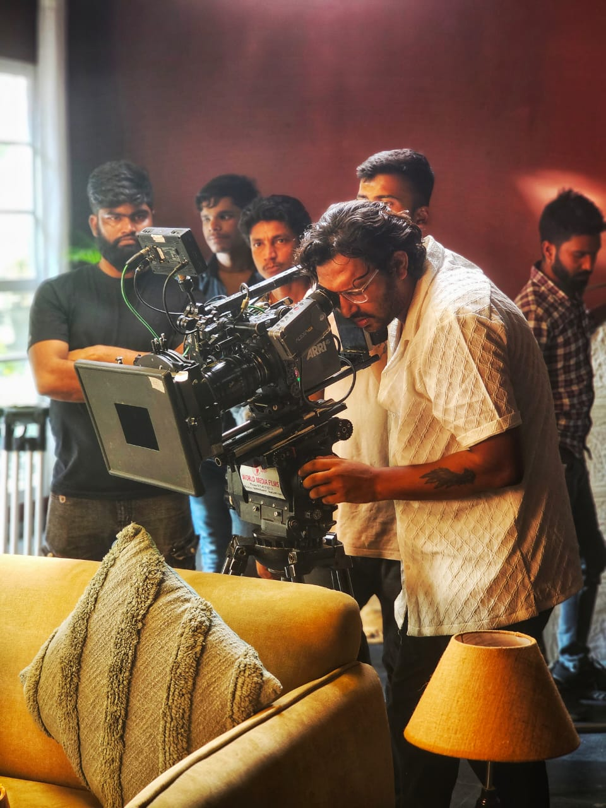
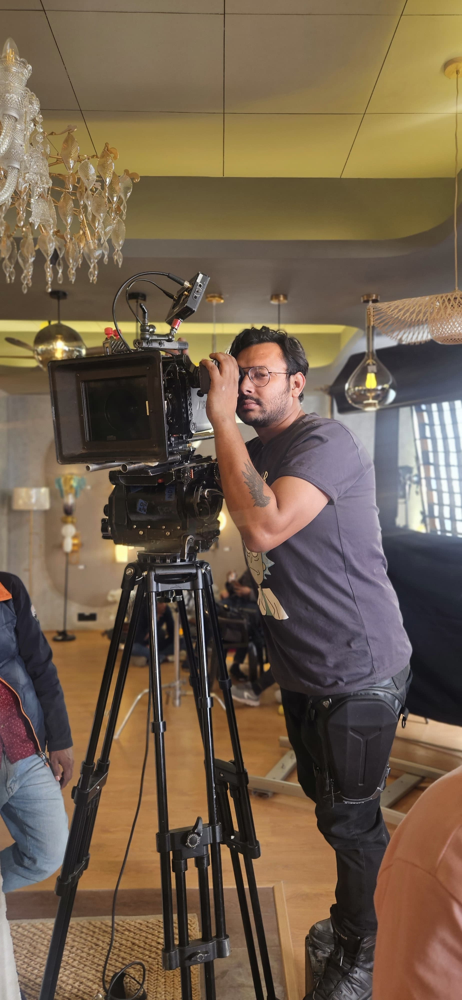
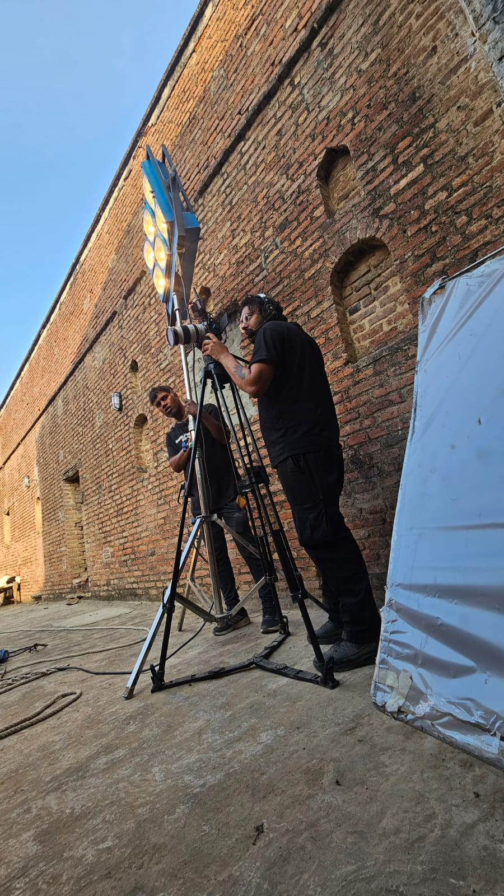
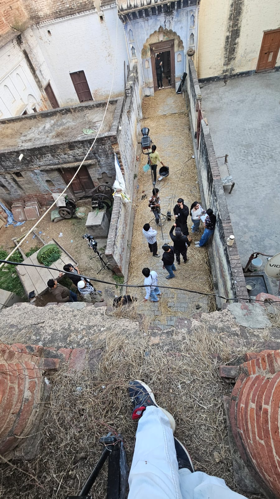
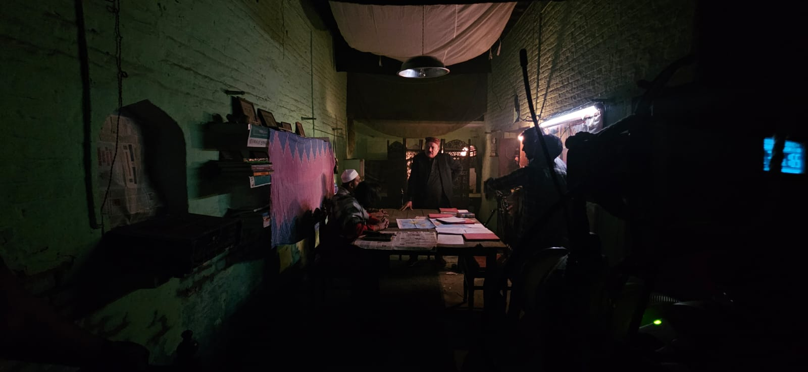
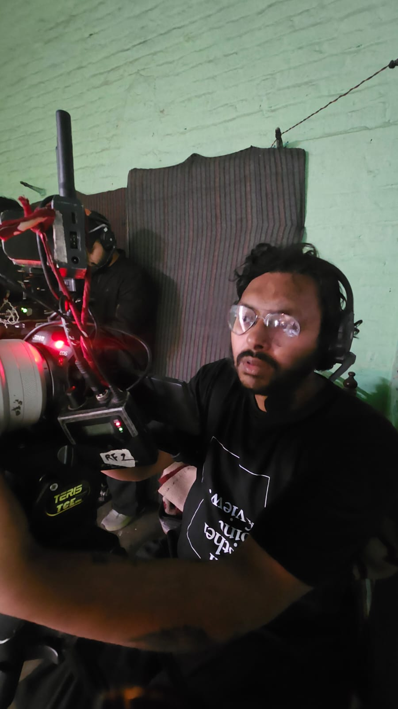
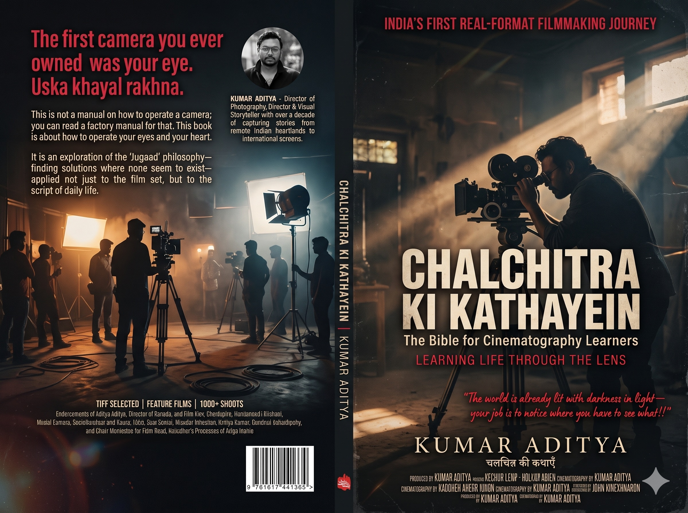

Human
Independence
The capacity to question, choose and shape a life with intention.
Visual Painter · Cinematographer · Storyteller
I observe the world through frames, but my curiosity has always existed beyond them.
Enter my worldI am a cinematographer, visual artist and storyteller, drawn to human experience, visual perception, culture, and the relationship between light, colour and emotion.
My journey in cinema has been shaped by the belief that images are not merely made; they are experienced. Every frame carries a perspective, every shadow conceals a possibility, and every colour has a language of its own.
Over the years, I have worked across documentaries, commercials, independent films, branded content and digital storytelling, collaborating with agencies, filmmakers, institutions and creative teams across India. My work moves between the structured demands of commercial filmmaking and the exploratory freedom of visual expression.
As a Director of Photography, I approach cinematography as more than a technical discipline. It is a way of understanding the world—observing people, interpreting spaces, studying light and translating intangible emotions into visual experiences.
But my interests extend beyond the camera. I am equally fascinated by philosophy, psychology, art, science, human consciousness and the cultural systems that shape the way we see and understand our existence.
I call myself a Visual Painter because, ultimately, that is how I understand my relationship with images. The camera is simply one of my instruments. Light is my medium. Observation is my process. And storytelling is my way of making sense of the world.
The frame is a beginning,
not a boundary.
This curiosity finds another expression through THE UMBRELLA PHILOSOPHY: an intellectual and creative exploration of human independence, consciousness, interconnectedness and collective evolution.
The capacity to question, choose and shape a life with intention.
Attention to the inner and outer worlds through which experience takes form.
Seeing how people, ideas and living systems shape one another.
Imagining futures in which individual freedom expands shared possibility.
Kumar Aditya · Director / Director of Photography
The camera is simply one of my instruments.
My work in cinema spans documentary, advertising, web series and independent film. I approach each project through observation: reading people and spaces, studying light, and finding the visual language that lets a story be felt.
Director of Photography
Watch the seriesDirector of Photography
View film referenceAssistant Cinematographer
Production credit · featuring Jeremy Renner
Watch the series





Project-based creative collaborators, as featured in the production team deck.
Executive Producer / Director
Producer / Writer / Director
Sound Design · Dialogue Editing · ADR
Post-production · Cinematography
I am interested in what exists beyond the obvious, what remains outside the frame, and what happens when we begin to question the way we see.
Visual notes and reflections from the spaces between cinema, art, consciousness and everyday life.

For projects, collaborations or a conversation, find me through these profiles.
Kumar Aditya · Visual Painter